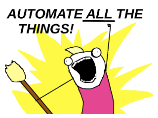

Don't repeat yourself
... with Vagrant & Chef
Inhalt
- Verwaltung virtueller Maschienen mit Vagrant
- Configuration Managment mit Chef
Vagrant
...in 5 Minuten
Einführung...
- Virtualbox - virtualbox.org
- Vagrant - www.vagrantup.com
- Boxes
- selber "machen" - github.com/box-cutter
- fertige boxen - vagrantbox.es
...zum laufenden System
$ vagrant init box-cutter/ubuntu1404
$ vagrant up
- Demo...
Configuration Management mit Chef
Warum?
Weil wir faul sind...
Quelle: C. A. Becker [11/2014]
...und die Arbeit nur einmal machen wollen!
Bekannteste Vertreter
- Puppet - puppetlabs.com
- Chef - getchef.com
Chef - Konzept

Quelle: Chef Documentation [11/2014]
Chef - Konzept II
- Cookbooks
- Environments
- Roles
Chef ohne Server
- knife-solo - atschaffer.github.io/knife-solo
- librarian-chef - github.com/applicationsonline/librarian-chef
Die wichtigsten Befehle
knife solo init --librarian .librarian updateknife solo prepare USER@SERVERknife solo cook USER@SERVER
Demo
Fragen?
Folien & Demo zum nachlesen - github.com/opendevmeet